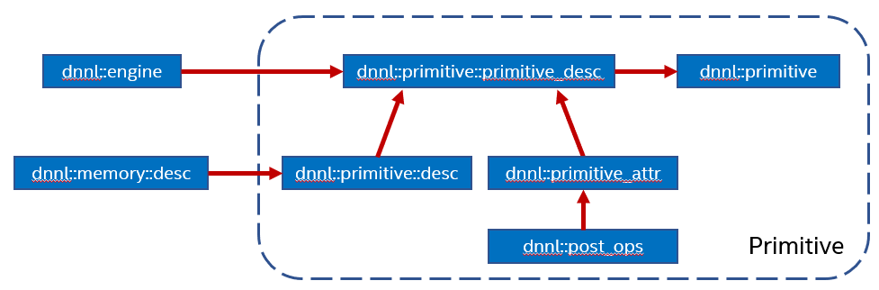

Primitives¶
Primitives are functor objects that encapsulates a particular computation such as forward convolution, backward LSTM computations, or a data transformation operation. A single primitive can sometimes represent more complex fused computations such as a forward convolution followed by a ReLU.
The most important difference between a primitive and a pure function is that a primitive can store state.
One part of the primitive’s state is immutable. For example, convolution primitives store parameters like tensor shapes and can pre-compute other dependent parameters like cache blocking. This approach allows oneDNN primitives to pre-generate code specifically tailored for the operation to be performed. The oneDNN programming model assumes that the time it takes to perform the pre-computations is amortized by reusing the same primitive to perform computations multiple times.
The mutable part of the primitive’s state is referred to as a scratchpad. It is a memory buffer that a primitive may use for temporary storage only during computations. The scratchpad can either be owned by a primitive object (which makes that object non-thread safe) or be an execution-time parameter.
Each primitive is defined using several abstraction levels.
{kind=link}
Operation descriptors (one for each supported primitive) describe an operation’s most basic properties without specifying, for example, which engine will be used to compute them. For example, convolution descriptor describes shapes of source, destination, and weights tensors, propagation kind (forward, backward with respect to data or weights), and other implementation-independent parameters. The shapes are usually described as memory descriptors (
dnnl::memory::desc).Primitive descriptors (
dnnl::primitive_desc_baseis the base class and each of the supported primitives have their own version) are at an abstraction level in between operation descriptors and primitives and can be used to inspect details of a specific primitive implementation like expected memory formats via queries to implement memory format propagation (see Memory format propagation) without having to fully instantiate a primitive.
Hence, the sequence of actions to create a primitive is:
Create an operation descriptor via, for example,
dnnl::convolution_forward::desc. The operation descriptor can contain memory descriptors with placeholderdnnl::memory::format_tag::anymemory formats if the primitive supports it.Create a primitive descriptor based on the operation descriptor, engine and attributes.
Create a primitive based on the primitive descriptor obtained in step 2.
Note
Strictly speaking, not all the primitives follow this sequence. For example, the reorder primitive does not have an operation descriptor and thus does not require step 1 above.